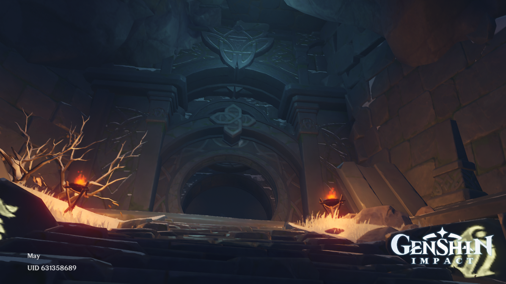
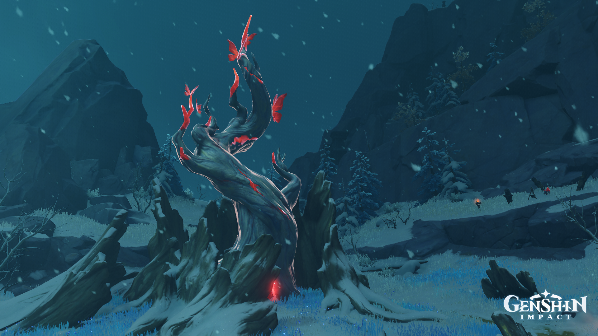
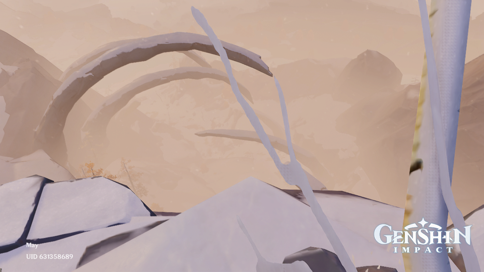

Dragonspine
What and Where is Dragonspine?

Dragonspine is a large mountain located southwest of the city of Mondstadt in the game Genshin Impact™. It is largely unexplored by the people of Mondstadt. The climate is harsh and cold all year round.
The mountain is the resting place of Durin, the venomous dragon who fought against Dvalin, another dragon. A civilization had inhabited the mountain before Durin, as evidenced from the ruins, secret rooms, and artifacts found in Dragonspine.
Ancient Civilization
Sal Vindagnyr was the name of the ancient kingdom in Dragonspine. The mountain was then known as Vindagnyr. The mountain only took the name Dragonspine after the dragon Durin had fallen there.
The princess of Sal Vindagnyr was born beneath a large tree, now known as the Frostbearing Tree. The princess, blessed with precognition, painted often. Some of her paintings were of what she foresaw. One day, she had a dream of "a black dragon that blotted down the sun”.
Around this time, Celestia cast the Skyfrost Nail upon the mountain. Imunlaukr, a traveller close to the princess, left the mountain in search of answers. The princess gave Imunlaukr a sword and promised to dedicate a fresco to him upon his return.
As the princess worked on the fresco, her father Varuch noticed that the great tree was starting to wither. By this time, the Skyfrost Nail had mysteriously split in three. Over time the pieces crumbled further, releasing orbs that froze areas on the mountain and shattered the great tree. The princess, seeing this, tried to plant another tree using the tree’s sapling, but both the sapling and the princess died in the cold. The princess was buried in the heart of the mountain.
Years later Imunlaukr returned to the mountain, empty-handed and without the answers he seeked, only to find that the nation of Sal Vindagnyr had been wiped out. He left once again, swearing vengeance upon Celestia, and the civilization became buried underneath the snow and ice.
Five hundred years from the present, the princess' dream became reality. Durin, the black, corrupted dragon, was killed by Dvalin and sealed in the mountain. Durin’s blood tainted the land, and the great tree turned red due to the blood. In the present, the Traveler restores the Skyfrost Nail and uncovers the tragedy of the lost civilization.
Click here to go back to the top.

Website by Lucy Chen.